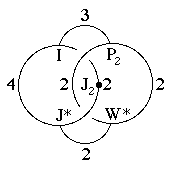
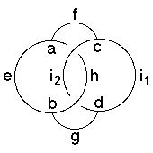

210
210
 212
212 Orbifold Atlas Home Page
Orbifold Atlas Home Page
 Crystallographic Topology Home Page
Crystallographic Topology Home Page
Underlying Topological Space: S3; Figure Pseudo-Symmetry (FPS): 1
Euclidean 3-Orbifold with Invariant-Lattice-Complex Letters
(left), Wyckoff Site Letters (right)
 
| FPS | Mult | Lattice Comp | Group Graph | Wyckoff Set | 2[4]Cover |
| 2-1 | I | 432 | a | ||
| 6-1 | J* | 422 | b | ||
| 8-1 | P2 | 322 | c | ||
| 12-1 | W* | 222 | d | ||
| 12-1 | I6[-]J*2 | 32<4>22 | (e:a-b)1 | ||
| 16-1 | I8[-]P22 | 42<3>22 | f:a-c | ||
| 24-1 | J*4[-]W*2 | 42<2>22 | g:b-d | ||
| 24-1 | I12[J2]J*4 | 43<2>42 | (h:a-b)2 | ||
| 24-2 | P23[-]W*2 | 32<2>22 | (i1:c-d)3, (i2:c-d)4 | ||
| 48 | 1 | j:efghi | |||
| 48-1 | P26[-]J22 | 2*=332<1>22 | j1:c-h | [#207(e)] | |
| 48-2 | m* | (j2:geh)5, (j3:feh)6 | #229(j,k) | ||
| Struct-Mult | Critical Points | Heegaard Surf | Wyckoff Cut |
| BCC -1 | I/P2/W*/J* | H42{22} | e i2 h i1 |
Lattice Points: (1) 0,0,0 + (1/2,0,0); (2) 0,0,0 + (1/2,1/2,0); (3) 1/4,1/4,1/4 + (0,1/4,-1/4); (4) 1/4,1/4,1/4 + (1/4,0,-1/4); (5) 0,y,z; (6) x,x,z
210
212
Orbifold Atlas Home Page
Crystallographic Topology Home Page
Page last revised: